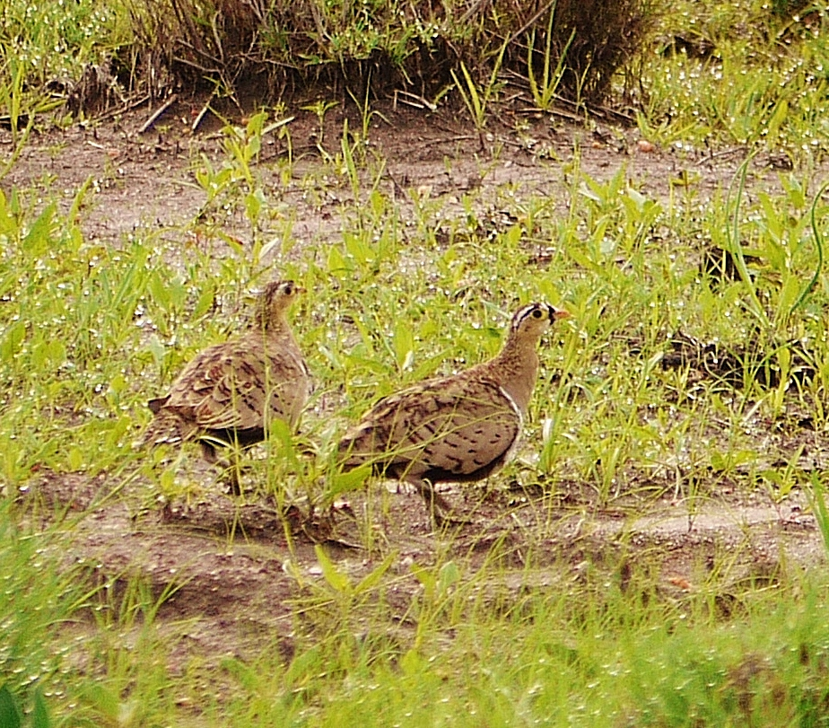

<!DOCTYPE html>
<html>
  <head>
    <meta http-equiv="Content-Type" content="text/html; charset=UTF-8"/>
    <link rel="icon" href="../arocha_old_logo_small.png" >
    <title>RE: [KENYABIRDSNET] Re: Black-faced Sandgrouse - Athi Basin Dam NNP</title>
  </head>
  <body>
  <div><strong>From</strong>: Jez Simms &lt;jez.simms@atsgroup.net&gt;</div>
  <div><strong>Date</strong>: 2017-03-14 15:19</div>
  <div><strong>Subject</strong>: RE: [KENYABIRDSNET] Re: Black-faced Sandgrouse - Athi Basin Dam NNP</div>
  <hr/>
  <html xmlns:v="urn:schemas-microsoft-com:vml" xmlns:o="urn:schemas-microsoft-com:office:office" xmlns:w="urn:schemas-microsoft-com:office:word" xmlns:m="http://schemas.microsoft.com/office/2004/12/omml" xmlns="http://www.w3.org/TR/REC-html40"><head><meta http-equiv=Content-Type content="text/html; charset=utf-8"><meta name=Generator content="Microsoft Word 15 (filtered medium)"><!--[if !mso]><style>v\:* {behavior:url(#default#VML);}
o\:* {behavior:url(#default#VML);}
w\:* {behavior:url(#default#VML);}
.shape {behavior:url(#default#VML);}
</style><![endif]--><style><!--
/* Font Definitions */
@font-face
	{font-family:Wingdings;
	panose-1:5 0 0 0 0 0 0 0 0 0;}
@font-face
	{font-family:"Cambria Math";
	panose-1:2 4 5 3 5 4 6 3 2 4;}
@font-face
	{font-family:Calibri;
	panose-1:2 15 5 2 2 2 4 3 2 4;}
@font-face
	{font-family:Consolas;
	panose-1:2 11 6 9 2 2 4 3 2 4;}
@font-face
	{font-family:Verdana;
	panose-1:2 11 6 4 3 5 4 4 2 4;}
/* Style Definitions */
p.MsoNormal, li.MsoNormal, div.MsoNormal
	{margin:0in;
	margin-bottom:.0001pt;
	font-size:12.0pt;
	font-family:"Times New Roman",serif;}
a:link, span.MsoHyperlink
	{mso-style-priority:99;
	color:blue;
	text-decoration:underline;}
a:visited, span.MsoHyperlinkFollowed
	{mso-style-priority:99;
	color:purple;
	text-decoration:underline;}
p
	{mso-style-priority:99;
	mso-margin-top-alt:auto;
	margin-right:0in;
	mso-margin-bottom-alt:auto;
	margin-left:0in;
	font-size:12.0pt;
	font-family:"Times New Roman",serif;}
code
	{mso-style-priority:99;
	font-family:"Courier New";}
pre
	{mso-style-priority:99;
	mso-style-link:"HTML Preformatted Char";
	margin:0in;
	margin-bottom:.0001pt;
	font-size:10.0pt;
	font-family:"Courier New";}
tt
	{mso-style-priority:99;
	font-family:"Courier New";}
span.HTMLPreformattedChar
	{mso-style-name:"HTML Preformatted Char";
	mso-style-priority:99;
	mso-style-link:"HTML Preformatted";
	font-family:Consolas;}
p.attach, li.attach, div.attach
	{mso-style-name:attach;
	mso-style-priority:99;
	mso-margin-top-alt:auto;
	margin-right:0in;
	mso-margin-bottom-alt:auto;
	margin-left:0in;
	font-size:9.0pt;
	font-family:"Arial",sans-serif;}
p.bold, li.bold, div.bold
	{mso-style-name:bold;
	mso-style-priority:99;
	mso-margin-top-alt:auto;
	margin-right:0in;
	mso-margin-bottom-alt:auto;
	margin-left:0in;
	font-size:10.0pt;
	font-family:"Arial",sans-serif;
	font-weight:bold;}
p.green, li.green, div.green
	{mso-style-name:green;
	mso-style-priority:99;
	mso-margin-top-alt:auto;
	margin-right:0in;
	mso-margin-bottom-alt:auto;
	margin-left:0in;
	font-size:12.0pt;
	font-family:"Times New Roman",serif;
	color:#628C2A;}
p.replbq, li.replbq, div.replbq
	{mso-style-name:replbq;
	mso-style-priority:99;
	margin:3.0pt;
	font-size:12.0pt;
	font-family:"Times New Roman",serif;}
p.ad, li.ad, div.ad
	{mso-style-name:ad;
	mso-style-priority:99;
	mso-margin-top-alt:auto;
	margin-right:0in;
	mso-margin-bottom-alt:auto;
	margin-left:0in;
	font-size:12.0pt;
	font-family:"Times New Roman",serif;}
p.underline, li.underline, div.underline
	{mso-style-name:underline;
	mso-style-priority:99;
	mso-margin-top-alt:auto;
	margin-right:0in;
	mso-margin-bottom-alt:auto;
	margin-left:0in;
	font-size:12.0pt;
	font-family:"Times New Roman",serif;}
p.ad1, li.ad1, div.ad1
	{mso-style-name:ad1;
	mso-style-priority:99;
	mso-margin-top-alt:auto;
	margin-right:0in;
	mso-margin-bottom-alt:auto;
	margin-left:0in;
	font-size:12.0pt;
	font-family:"Times New Roman",serif;}
p.ad2, li.ad2, div.ad2
	{mso-style-name:ad2;
	mso-style-priority:99;
	mso-margin-top-alt:auto;
	margin-right:0in;
	margin-bottom:7.5pt;
	margin-left:0in;
	font-size:12.0pt;
	font-family:"Times New Roman",serif;}
p.underline1, li.underline1, div.underline1
	{mso-style-name:underline1;
	mso-style-priority:99;
	mso-margin-top-alt:auto;
	margin-right:0in;
	mso-margin-bottom-alt:auto;
	margin-left:0in;
	font-size:12.0pt;
	font-family:"Times New Roman",serif;
	text-decoration:underline;}
span.cat
	{mso-style-name:cat;}
span.ct
	{mso-style-name:ct;}
span.yshortcuts
	{mso-style-name:yshortcuts;}
span.yshortcuts1
	{mso-style-name:yshortcuts1;
	font-family:"Verdana",sans-serif;
	font-weight:bold;}
span.yshortcuts2
	{mso-style-name:yshortcuts2;
	font-family:"Verdana",sans-serif;
	font-weight:normal;}
span.EmailStyle36
	{mso-style-type:personal-reply;
	font-family:"Calibri",sans-serif;
	color:#1F497D;}
.MsoChpDefault
	{mso-style-type:export-only;
	font-size:10.0pt;}
@page WordSection1
	{size:8.5in 11.0in;
	margin:1.0in 1.0in 1.0in 1.0in;}
div.WordSection1
	{page:WordSection1;}
/* List Definitions */
@list l0
	{mso-list-id:979728343;
	mso-list-template-ids:2128269774;}
@list l0:level1
	{mso-level-number-format:bullet;
	mso-level-text:;
	mso-level-tab-stop:.5in;
	mso-level-number-position:left;
	text-indent:-.25in;
	mso-ansi-font-size:10.0pt;
	font-family:Symbol;}
@list l0:level2
	{mso-level-number-format:bullet;
	mso-level-text:o;
	mso-level-tab-stop:1.0in;
	mso-level-number-position:left;
	text-indent:-.25in;
	mso-ansi-font-size:10.0pt;
	font-family:"Courier New";
	mso-bidi-font-family:"Times New Roman";}
@list l0:level3
	{mso-level-number-format:bullet;
	mso-level-text:;
	mso-level-tab-stop:1.5in;
	mso-level-number-position:left;
	text-indent:-.25in;
	mso-ansi-font-size:10.0pt;
	font-family:Wingdings;}
@list l0:level4
	{mso-level-number-format:bullet;
	mso-level-text:;
	mso-level-tab-stop:2.0in;
	mso-level-number-position:left;
	text-indent:-.25in;
	mso-ansi-font-size:10.0pt;
	font-family:Wingdings;}
@list l0:level5
	{mso-level-number-format:bullet;
	mso-level-text:;
	mso-level-tab-stop:2.5in;
	mso-level-number-position:left;
	text-indent:-.25in;
	mso-ansi-font-size:10.0pt;
	font-family:Wingdings;}
@list l0:level6
	{mso-level-number-format:bullet;
	mso-level-text:;
	mso-level-tab-stop:3.0in;
	mso-level-number-position:left;
	text-indent:-.25in;
	mso-ansi-font-size:10.0pt;
	font-family:Wingdings;}
@list l0:level7
	{mso-level-number-format:bullet;
	mso-level-text:;
	mso-level-tab-stop:3.5in;
	mso-level-number-position:left;
	text-indent:-.25in;
	mso-ansi-font-size:10.0pt;
	font-family:Wingdings;}
@list l0:level8
	{mso-level-number-format:bullet;
	mso-level-text:;
	mso-level-tab-stop:4.0in;
	mso-level-number-position:left;
	text-indent:-.25in;
	mso-ansi-font-size:10.0pt;
	font-family:Wingdings;}
@list l0:level9
	{mso-level-number-format:bullet;
	mso-level-text:;
	mso-level-tab-stop:4.5in;
	mso-level-number-position:left;
	text-indent:-.25in;
	mso-ansi-font-size:10.0pt;
	font-family:Wingdings;}
ol
	{margin-bottom:0in;}
ul
	{margin-bottom:0in;}
--></style><!--[if gte mso 9]><xml>
<o:shapedefaults v:ext="edit" spidmax="1026" />
</xml><![endif]--><!--[if gte mso 9]><xml>
<o:shapelayout v:ext="edit">
<o:idmap v:ext="edit" data="1" />
</o:shapelayout></xml><![endif]--></head><body bgcolor=white lang=EN-US link=blue vlink=purple><div class=WordSection1><p class=MsoNormal><span style='font-size:11.0pt;font-family:"Calibri",sans-serif;color:#1F497D'>Black-faced Sandgrouse was unrecorded at Hopcraft Game Ranch, Athi River prior to 2015, it has now been seen on several occasions. We are very near the National Park. This, not great, image from Nov 29<sup>th</sup> 2015. Cheers Jez<o:p></o:p></span></p><p class=MsoNormal><span style='font-size:11.0pt;font-family:"Calibri",sans-serif;color:#1F497D'><o:p>&nbsp;</o:p></span></p><div><p class=MsoNormal><b><span style='font-size:9.0pt;font-family:"Calibri",sans-serif;color:#1F497D'>JEZ SIMMS<o:p></o:p></span></b></p><p class=MsoNormal><b><span style='font-size:9.0pt;font-family:"Calibri",sans-serif;color:#1F497D'>REMOTE SITES DEVELOPMENT MANAGER<o:p></o:p></span></b></p><p class=MsoNormal><b><span style='font-size:9.0pt;font-family:"Calibri",sans-serif;color:#660033'>ATS GROUP (EA)<o:p></o:p></span></b></p><p class=MsoNormal><b><span style='font-size:9.0pt;font-family:"Calibri",sans-serif;color:#1F497D'>P.O. BOX 9555-00100<o:p></o:p></span></b></p><p class=MsoNormal><b><span style='font-size:9.0pt;font-family:"Calibri",sans-serif;color:#1F497D'>NAIROBI, KENYA.<o:p></o:p></span></b></p><p class=MsoNormal><b><span style='font-size:9.0pt;font-family:"Calibri",sans-serif;color:#1F497D'>TEL. (ROAMING) +233 249 486348/KENYA +254 707 963972/TZ +255 778 221300/EIRE +353 87 6896964<o:p></o:p></span></b></p><p class=MsoNormal><b><span style='font-size:9.0pt;font-family:"Calibri",sans-serif;color:#1F497D'>SKYPE: jezsimms<o:p></o:p></span></b></p><p class=MsoNormal><b><span style='font-size:9.0pt;font-family:"Calibri",sans-serif;color:#1F497D'>www.atsgroup.net<o:p></o:p></span></b></p><p class=MsoNormal><b><span style='font-size:9.0pt;font-family:"Calibri",sans-serif;color:#660033'><o:p>&nbsp;</o:p></span></b></p></div><p class=MsoNormal><span style='font-size:11.0pt;font-family:"Calibri",sans-serif;color:#1F497D'><o:p>&nbsp;</o:p></span></p><div><div style='border:none;border-top:solid #E1E1E1 1.0pt;padding:3.0pt 0in 0in 0in'><p class=MsoNormal><b><span style='font-size:11.0pt;font-family:"Calibri",sans-serif'>From:</span></b><span style='font-size:11.0pt;font-family:"Calibri",sans-serif'> kenyabirdsnet@yahoogroups.com [mailto:kenyabirdsnet@yahoogroups.com] <b>On Behalf Of </b>adamscottkennedy@gmail.com [kenyabirdsnet]<br><b>Sent:</b> Tuesday, March 14, 2017 10:54 AM<br><b>To:</b> Graeme Backhurst &lt;graeme.backhurst@gmail.com&gt;<br><b>Cc:</b> kenyabirdsnet@yahoogroups.com<br><b>Subject:</b> Re: [KENYABIRDSNET] Re: Black-faced Sandgrouse - Athi Basin Dam NNP<o:p></o:p></span></p></div></div><p class=MsoNormal><o:p>&nbsp;</o:p></p><p class=MsoNormal>&nbsp; <o:p></o:p></p><div id=ygrp-mlmsg><div id=ygrp-msg><div id=ygrp-text><div><p class=MsoNormal>A more up to date reference booklet is Brian Finch's NNP checklist which I recommend to everyone.<o:p></o:p></p></div><div id=AppleMailSignature><p class=MsoNormal><o:p>&nbsp;</o:p></p></div><div id=AppleMailSignature><p class=MsoNormal>Regards,<o:p></o:p></p></div><div id=AppleMailSignature><p class=MsoNormal>Adam<br><br>Sent from my iPhone<o:p></o:p></p></div><div><p class=MsoNormal style='margin-bottom:12.0pt'><br>On 14 Mar 2017, at 09:38, Graeme Backhurst <a href="mailto:graeme.backhurst@gmail.com">graeme.backhurst@gmail.com</a> [kenyabirdsnet] &lt;<a href="mailto:kenyabirdsnet-noreply@yahoogroups.com">kenyabirdsnet-noreply@yahoogroups.com</a>&gt; wrote:<o:p></o:p></p></div><blockquote style='margin-top:5.0pt;margin-bottom:5.0pt'><div><p class=MsoNormal>&nbsp; <o:p></o:p></p><div id=ygrp-text><p>Hello James,<o:p></o:p></p><div><p class=MsoNormal><o:p>&nbsp;</o:p></p></div><div><p class=MsoNormal>It is listed as ‘rare’ in Nairobi NP by Bill Harvey in his <i>Annotated Checklist of the Birds of Nairobi</i>, Nairobi: British Council, October 1997.<o:p></o:p></p><div><p class=MsoNormal><o:p>&nbsp;</o:p></p></div><div><p class=MsoNormal>Graeme Backhurst<o:p></o:p></p></div><div><p class=MsoNormal><o:p>&nbsp;</o:p></p></div><div><p class=MsoNormal style='margin-bottom:12.0pt'><o:p>&nbsp;</o:p></p></div></div></div></div></blockquote></div><div><p class=MsoNormal><span style='color:white'><o:p></o:p></span></p></div></div></body></html>
  <hr/>
  
</body>
</html>